Fig: DCI#
# HIDE CODE
import os, sys
from IPython.display import display
# tmp & extras dir
git_dir = os.path.join(os.environ['HOME'], 'Dropbox/git')
extras_dir = os.path.join(git_dir, 'jb-MTMST/_extras')
fig_base_dir = os.path.join(git_dir, 'jb-MTMST/figs')
tmp_dir = os.path.join(git_dir, 'jb-MTMST/tmp')
# GitHub
sys.path.insert(0, os.path.join(git_dir, '_MTMST'))
from vae.train_vae import TrainerVAE, ConfigTrainVAE
from vae.vae2d import VAE, ConfigVAE
from figures.fighelper import *
from analysis.glm import *
# warnings, tqdm, & style
warnings.filterwarnings('ignore', category=DeprecationWarning)
from rich.jupyter import print
%matplotlib inline
set_style()
from base.dataset import ROFLDS
from analysis.linear import compute_dci
category2latex = {
'fixate0': '\\fixate{0}',
'fixate1': '\\fixate{1}',
'obj1': '\\obj{1}',
}
kws_fig = {
'transparent': True,
'bbox_inches': 'tight',
'dpi': 300,
}
skip_fits = [
'fixate2_nf-420_beta-0.15_(2023_04_27,13:57).npy',
'fixate1_nf-420_beta-0.8_(2023_05_07,04:15).npy',
]
label2latex = {
'fix_x': r'$F_x$',
'fix_y': r'$F_y$',
'slf_v_x': r'$V_{self, x}$',
'slf_v_y': r'$V_{self, y}$',
'slf_v_z': r'$V_{self, z}$',
'obj0_x': r'$X_{obj}$',
'obj0_y': r'$Y_{obj}$',
'obj0_z': r'$Z_{obj}$',
'obj0_v_x': r'$V_{obj, x}$',
'obj0_v_y': r'$V_{obj, y}$',
'obj0_v_z': r'$V_{obj, z}$',
}
pal_model, pal_cat = get_palette()
def _info(fit):
info = fit.split('_')
i = info.index([
e for e in info
if 'nf-' in e
].pop())
category = info[i - 1]
nf = int(info[i].split('-')[1])
beta = info[i + 1].split('-')[1]
try:
beta = float(beta)
except ValueError:
beta = str(beta)
tag = 'VAE' if 'vanilla' in info else 'cNVAE'
if beta == 'ae':
tag = tag.replace('V', '')
return category, nf, beta, tag
path = pjoin(tmp_dir, 'trainer_analysis')
df_i_r2 = []
df_dci = collections.defaultdict(list)
for fit in tqdm(sorted(os.listdir(path))):
if 'reservoir' in fit or fit in skip_fits:
continue
if fit in skip_fits:
continue
category, nf, beta, tag = _info(fit)
if beta == 20.0:
continue
# load
everything = np.load(
pjoin(path, fit),
allow_pickle=True,
).item()
# info
df_dci['model'].append(tag)
df_dci['category'].append(category)
df_dci['beta'].append(beta)
df_dci['nf'].append(nf)
# losses
epe = everything['loss']['epe'].mean()
df_dci['epe'].append(epe)
df_dci['epepd'].append(epe / 17 ** 2)
if isinstance(beta, float):
kl = everything['loss']['kl'].mean()
tot_active = (everything['loss']['kl_diag'] > 0.1).sum()
else:
kl = np.nan
tot_active = np.nan
df_dci['nelbo'].append(epe + kl)
df_dci['kl'].append(kl)
df_dci['tot_active'].append(tot_active)
# load dataset
sim_path = f"/home/hadi/Documents/MTMST/data/{category}_dim-17_n-750k"
ds_vld = ROFLDS(sim_path, 'vld')
ds_tst = ROFLDS(sim_path, 'tst')
assert everything['f'] \
== ds_vld.f + ds_vld.f_aux \
== ds_tst.f + ds_tst.f_aux
# select main ground-truth variables
select_i, select_lbl = zip(*[
(i, lbl) for i, lbl in
enumerate(everything['f'])
if lbl in label2latex
])
select_i = np.array(select_i)
select_lbl = list(select_lbl)
# R^2
g = np.concatenate([ds_vld.g, ds_vld.g_aux], axis=1)[:, select_i]
g_tst = np.concatenate([ds_tst.g, ds_tst.g_aux], axis=1)[:, select_i]
lr = sk_linear.LinearRegression().fit(
everything['data_vld']['z'], g)
pred = lr.predict(everything['data_tst']['z'])
r2 = sk_metric.r2_score(
y_true=g_tst,
y_pred=pred,
multioutput='raw_values',
)
df_i_r2.append({
'model': [tag] * len(r2),
'category': [category] * len(r2),
'beta': [beta] * len(r2),
'nf': [nf] * len(r2),
'f': select_lbl,
'r2': r2,
})
r2 = np.nanmean(r2)
df_dci['i'].append(r2)
# DC
w = everything['importances_mu'][select_i]
w = np.maximum(0, w)
d, c = compute_dci(w)
rho = w.sum(0) / w.sum()
if isinstance(beta, float):
spear_r = sp_stats.spearmanr(
everything['loss']['kl_diag'], rho)
spear_r = spear_r.correlation
else:
spear_r = np.nan
df_dci['d'].append(d)
df_dci['c'].append(c)
df_dci['dci'].append(np.mean([d, c, r2]))
df_dci['rho_ent'].append(entropy_normalized(rho))
df_dci['spear_kl_rho'].append(spear_r)
df_dci = pd.DataFrame(df_dci)
df_i_r2 = pd.DataFrame(merge_dicts(df_i_r2))
betas = ['ae'] + sorted([
b for b in df_dci['beta'].unique()
if isinstance(b, float)
])
100%|██████████| 85/85 [14:05<00:00, 9.94s/it]
df_dci
| model | category | beta | nf | epe | epepd | nelbo | kl | tot_active | i | d | c | dci | rho_ent | spear_kl_rho | |
|---|---|---|---|---|---|---|---|---|---|---|---|---|---|---|---|
| 0 | cNVAE | fixate0 | 0.1 | 280 | 0.564681 | 0.001954 | 24.474018 | 23.909336 | 14.0 | 0.780826 | 0.324399 | 0.510160 | 0.538462 | 0.545987 | 0.319565 |
| 1 | cNVAE | fixate0 | 0.5 | 280 | 2.507265 | 0.008676 | 17.201626 | 14.694360 | 11.0 | 0.955640 | 0.381168 | 0.471393 | 0.602734 | 0.619061 | -0.085091 |
| 2 | cNVAE | fixate0 | 0.8 | 280 | 3.876436 | 0.013413 | 16.414843 | 12.538406 | 14.0 | 0.972474 | 0.400301 | 0.580116 | 0.650964 | 0.459478 | 0.436461 |
| 3 | cNVAE | fixate0 | 1.0 | 280 | 4.865442 | 0.016835 | 16.239119 | 11.373676 | 12.0 | 0.956546 | 0.460299 | 0.570981 | 0.662609 | 0.493624 | -0.181092 |
| 4 | cNVAE | fixate0 | 10.0 | 280 | 44.057735 | 0.152449 | 44.533688 | 0.475953 | 1.0 | 0.155885 | 0.341932 | 0.404930 | 0.300916 | 0.647181 | 0.438073 |
| ... | ... | ... | ... | ... | ... | ... | ... | ... | ... | ... | ... | ... | ... | ... | ... |
| 76 | VAE | fixate1 | 1.5 | 420 | 21.943741 | 0.075930 | 30.526846 | 8.583105 | 6.0 | 0.548411 | 0.329943 | 0.138043 | 0.338799 | 0.960167 | 0.330139 |
| 77 | VAE | fixate1 | 10.0 | 420 | 54.984619 | 0.190258 | 55.434219 | 0.449600 | 1.0 | 0.354888 | 0.306664 | 0.153363 | 0.271638 | 0.946120 | 0.694643 |
| 78 | VAE | fixate1 | 2.0 | 420 | 24.347424 | 0.084247 | 31.593122 | 7.245699 | 6.0 | 0.548009 | 0.339428 | 0.136601 | 0.341346 | 0.966365 | 0.385571 |
| 79 | VAE | fixate1 | 5.0 | 420 | 41.640739 | 0.144086 | 44.016502 | 2.375763 | 3.0 | 0.482426 | 0.292404 | 0.135136 | 0.303322 | 0.967966 | 0.585178 |
| 80 | AE | fixate1 | ae | 420 | 0.071882 | 0.000249 | NaN | NaN | NaN | 0.476988 | 0.306682 | 0.408661 | 0.397444 | 0.693315 | NaN |
81 rows × 15 columns
_df = df_dci.loc[
(df_dci['model'] == 'cNVAE') &
(df_dci['category'] == 'fixate1')
]
best_i_cnvae = _df['i'].argmax()
best_beta_cnvae = _df.iloc[best_i_cnvae]['beta']
_df.iloc[[best_i_cnvae]]
| model | category | beta | nf | epe | epepd | nelbo | kl | tot_active | i | d | c | dci | rho_ent | spear_kl_rho | |
|---|---|---|---|---|---|---|---|---|---|---|---|---|---|---|---|
| 10 | cNVAE | fixate1 | 0.15 | 420 | 1.770626 | 0.006127 | 38.868622 | 37.097996 | 44.0 | 0.89788 | 0.461951 | 0.699985 | 0.686606 | 0.308088 | -0.236125 |
_df = df_dci.loc[
(df_dci['model'] == 'VAE') &
(df_dci['category'] == 'fixate1')
]
best_i_vae = _df['i'].argmax()
best_beta_vae = _df.iloc[best_i_vae]['beta']
_df.iloc[[best_i_vae]]
| model | category | beta | nf | epe | epepd | nelbo | kl | tot_active | i | d | c | dci | rho_ent | spear_kl_rho | |
|---|---|---|---|---|---|---|---|---|---|---|---|---|---|---|---|
| 76 | VAE | fixate1 | 1.5 | 420 | 21.943741 | 0.07593 | 30.526846 | 8.583105 | 6.0 | 0.548411 | 0.329943 | 0.138043 | 0.338799 | 0.960167 | 0.330139 |
_df = df_i_r2.loc[
(df_i_r2['category'] == 'fixate1') &
(df_i_r2['beta'].isin([best_beta_cnvae, 'ae']))
]
fig, ax = create_figure(1, 1, (11, 3))
bp = sns.barplot(
data=_df,
x='f',
y='r2',
hue='model',
hue_order=pal_model,
palette=pal_model,
dodge=True,
width=0.82,
ax=ax,
)
barplot_add_vals(
bp,
frac_x=0.35,
frac_y=0.105,
fontsize=9.0,
rotation=-90,
ha='center',
color='w',
decimals=2,
)
ax.tick_params(axis='x', rotation=0, labelsize=13)
ax.set_xticklabels(label2latex.values())
ax.set_ylabel(r'$R^2$ [%]', fontsize=15)
ax.set_xlabel('')
ax.grid()
leg = ax.get_legend()
if leg is not None:
leg.remove()
# leg.set_bbox_to_anchor((1.0, 1.04))
plt.show()
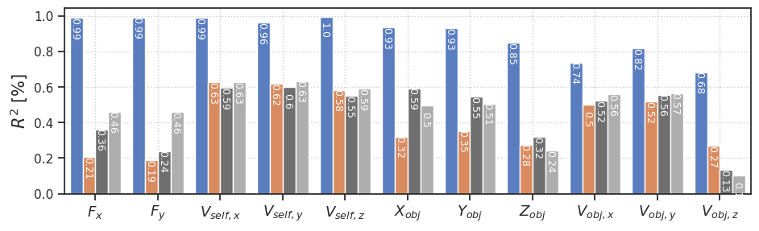
_df_cnvae = df_i_r2.loc[
(df_i_r2['category'] == 'fixate1') &
(df_i_r2['beta'].isin([best_beta_cnvae, 'ae'])) &
(df_i_r2['model'] != 'VAE')
]
_df_vae = df_i_r2.loc[
(df_i_r2['category'] == 'fixate1') &
(df_i_r2['beta'] == best_beta_vae) &
(df_i_r2['model'] != 'cNVAE')
]
fig, ax = create_figure(1, 1, (10, 3))
bp = sns.barplot(
data=pd.concat([_df_cnvae, _df_vae]),
x='f',
y='r2',
hue='model',
hue_order=pal_model,
palette=pal_model,
dodge=True,
width=0.82,
ax=ax,
)
barplot_add_vals(
bp,
frac_x=0.35,
frac_y=0.105,
fontsize=9.0,
rotation=-90,
ha='center',
color='w',
decimals=2,
)
ax.set_ylabel(r'$R^2$', fontsize=13)
ax.tick_params(axis='y', labelsize=10)
ax.set_xticklabels(label2latex.values())
ax.set_xlabel('')
ax.grid()
sns.move_legend(ax, None, bbox_to_anchor=(1, 1))
plt.show()
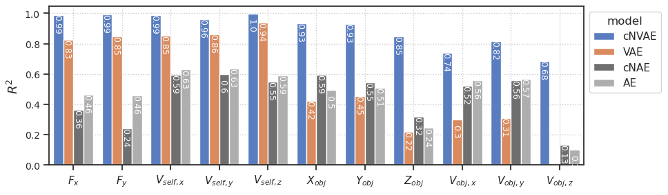
pca_dci = np.load(
pjoin(tmp_dir, 'pca_results.npy'),
allow_pickle=True,
).item()
pal_model['PCA'] = '#5aa57d'
df_to_plot = pd.concat([_df_cnvae, _df_vae])
def barplot_add_vals(
axes,
frac_x: float = 0.5,
frac_y: float = 0.035,
fontsize: float = 10,
rotation: float = 0,
decimals: int = 2,
ha: str = 'center',
color: str = 'k', ):
ymax = axes.get_ybound()[1]
def _single(_ax):
for p in _ax.patches:
h = p.get_height()
w = p.get_width()
if h < 0.05:
continue
_ax.text(
x=p.get_x() + frac_x * w,
y=p.get_y() + h - frac_y * ymax,
s=np.round(h, decimals),
fontsize=fontsize,
rotation=rotation,
color=color,
ha=ha,
)
if isinstance(axes, np.ndarray):
for idx, ax in np.ndenumerate(axes):
_single(ax)
else:
_single(axes)
return
fig, ax = create_figure(1, 1, (10, 3))
bp = sns.barplot(
data=pd.concat([df_to_plot, pd.DataFrame({'model': ['PCA'] * 11, 'r2': pca_dci['r2'], 'f': select_lbl})]),
x='f',
y='r2',
hue='model',
hue_order=['cNVAE', 'VAE', 'PCA', 'cNAE', 'AE'],
palette=pal_model,
dodge=True,
width=0.795,
ax=ax,
)
barplot_add_vals(
bp,
frac_x=0.41,
frac_y=0.10,
fontsize=8.0,
rotation=-90,
ha='center',
color='w',
decimals=2,
)
ax.set_ylim(bottom=-0.03)
ax.set_ylabel(r'$R^2$', fontsize=13)
ax.tick_params(axis='y', labelsize=10)
ax.set_xticklabels(label2latex.values())
ax.set_xlabel('')
ax.grid()
sns.move_legend(ax, None, bbox_to_anchor=(1, 1.04))
plt.show()
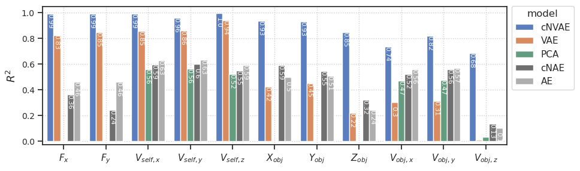
fig.savefig(pjoin(fig_base_dir, 'untangle_full.pdf'), **kws_fig)
fig.savefig(pjoin(fig_base_dir, 'untangle_full.png'), **kws_fig)
_df1 = df_dci.loc[
(df_dci['category'] == 'fixate1') &
(df_dci['beta'] != 'ae')
]
_df2 = df_dci.loc[
(df_dci['category'] == 'fixate1') &
(df_dci['beta'] == 'ae')
]
_pal1 = {
k: v for k, v in pal_model.items()
if k in _df1['model'].unique()
}
_pal2 = {
k: v for k, v in pal_model.items()
if k in _df2['model'].unique()
}
dci = {
'i': 'Informativeness',
'd': 'Disentanglement',
'c': 'Completeness',
'dci': 'DCI',
}
fig, axes = create_figure(4, 1, (8, 4), 'all', layout='constrained')
for i, (metric, label) in enumerate(dci.items()):
bp1 = sns.barplot(
data=_df1,
x='beta',
y=metric,
hue='model',
order=betas,
dodge=True,
width=0.5,
hue_order=_pal1,
palette=_pal1,
ax=axes[i],
)
bp2 = sns.barplot(
data=_df2,
x='beta',
y=metric,
hue='model',
order=betas,
dodge=True,
width=0.5,
hue_order=_pal2,
palette=_pal2,
ax=axes[i],
)
axes[i].set_ylim(bottom=0)
axes[i].set(xlabel='', ylabel='')
axes[i].annotate(
text=label,
xy=(0.85, 1.05),
xycoords='axes fraction',
fontsize=10,
)
leg = axes[i].get_legend()
if leg is not None:
leg.remove()
add_grid(axes)
for ax in axes.flat:
ax.tick_params(axis='both', labelsize=10)
# barplot_add_vals(bp, frac_y=-0.003, fontsize=9, decimals=1)
# ax.set_ylabel(r'$R^2$ [%]', fontsize=17)
axes[-1].tick_params(axis='x', rotation=0)
axes[-1].set_xlabel(r'$\beta$', fontsize=15)
# ax.set_ylabel('Performance', fontsize=13)
ax.tick_params(axis='y', labelsize=10)
plt.show()
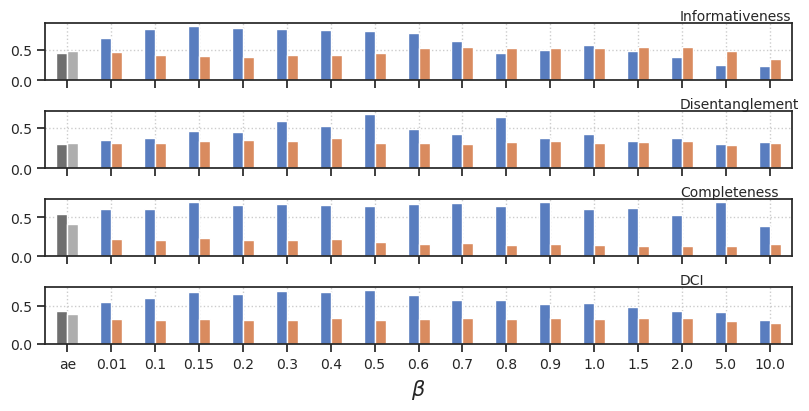
_df1 = df_dci.loc[
(df_dci['category'] == 'fixate1') &
(df_dci['beta'] != 'ae')
]
_df2 = df_dci.loc[
(df_dci['category'] == 'fixate1') &
(df_dci['beta'] == 'ae')
]
_pal1 = {
k: v for k, v in pal_model.items()
if k in _df1['model'].unique()
}
_pal2 = {
k: v for k, v in pal_model.items()
if k in _df2['model'].unique()
}
dci = {
'i': 'Informativeness',
'd': 'Disentanglement',
'c': 'Completeness',
}
xy_frac = {
'i': (0.863, 0.80),
'd': (0.853, 0.80),
'c': (0.877, 0.80),
}
fig, axes = create_figure(3, 1, (8, 3), 'all', layout='constrained')
for i, (metric, label) in enumerate(dci.items()):
bp1 = sns.barplot(
data=_df1,
x='beta',
y=metric,
hue='model',
order=betas,
dodge=True,
width=0.5,
hue_order=_pal1,
palette=_pal1,
ax=axes[i],
)
bp2 = sns.barplot(
data=_df2,
x='beta',
y=metric,
hue='model',
order=betas,
dodge=True,
width=0.5,
hue_order=_pal2,
palette=_pal2,
ax=axes[i],
)
axes[i].set_ylim((0, 1.0))
axes[i].set(xlabel='', ylabel='')
axes[i].annotate(
text=label,
xy=xy_frac[metric],
xycoords='axes fraction',
fontsize=9,
)
leg = axes[i].get_legend()
if leg is not None: # and i > 0:
leg.remove()
add_grid(axes)
for ax in axes.flat:
ax.tick_params(axis='both', labelsize=10)
# barplot_add_vals(bp, frac_y=-0.003, fontsize=9, decimals=1)
# ax.set_ylabel(r'$R^2$ [%]', fontsize=17)
axes[-1].tick_params(axis='x', rotation=0)
axes[-1].set_xlabel(r'$\beta$', fontsize=13)
# sns.move_legend(axes[0], None, bbox_to_anchor=(1, 1), fontsize=4)
# ax.set_ylabel('Performance', fontsize=13)
plt.show()
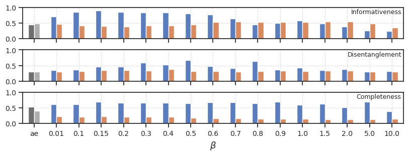
fig.savefig(pjoin(fig_base_dir, 'dci.pdf'), **kws_fig)
fig.savefig(pjoin(fig_base_dir, 'dci.png'), **kws_fig)
_df1 = df_dci.loc[
(df_dci['category'] == 'fixate1') &
(df_dci['beta'] != 'ae')
]
_df2 = df_dci.loc[
(df_dci['category'] == 'fixate1') &
(df_dci['beta'] == 'ae')
]
_pal1 = {
k: v for k, v in pal_model.items()
if k in _df1['model'].unique()
}
_pal2 = {
k: v for k, v in pal_model.items()
if k in _df2['model'].unique()
}
dci = {
'i': 'Informativeness',
'd': 'Disentanglement',
'c': 'Completeness',
}
xy_frac = {
'i': (0.588, 0.818),
'd': (0.56, 0.815),
'c': (0.63, 0.815),
}
fig, axes = create_figure(3, 1, (3.9, 3.2), 'all', layout='constrained')
for i, (metric, label) in enumerate(dci.items()):
bp1 = sns.barplot(
data=_df1,
x='beta',
y=metric,
hue='model',
order=betas,
dodge=True,
width=0.7,
hue_order=_pal1,
palette=_pal1,
ax=axes[i],
)
bp2 = sns.barplot(
data=_df2,
x='beta',
y=metric,
hue='model',
order=betas,
dodge=True,
width=0.7,
hue_order=_pal2,
palette=_pal2,
ax=axes[i],
)
axes[i].set_ylim((0, 0.92))
axes[i].set(xlabel='', ylabel='')
axes[i].annotate(
text=label,
xy=xy_frac[metric],
xycoords='axes fraction',
fontsize=10,
)
leg = axes[i].get_legend()
if leg is not None and i > 0:
leg.remove()
add_grid(axes)
for ax in axes.flat:
ax.tick_params(axis='both', labelsize=10)
# barplot_add_vals(bp, frac_y=-0.003, fontsize=9, decimals=1)
# ax.set_ylabel(r'$R^2$ [%]', fontsize=17)
axes[-1].tick_params(axis='x', rotation=-90, labelsize=9)
axes[-1].set_xlabel(r'$\beta$', fontsize=13)
sns.move_legend(axes[0], None, bbox_to_anchor=(1, 1.063), fontsize=6, title_fontsize=7)
# ax.set_ylabel('Performance', fontsize=13)
plt.show()
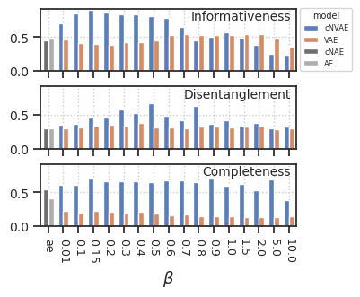
fig.savefig(pjoin(fig_base_dir, 'dci.pdf'), **kws_fig)
fig.savefig(pjoin(fig_base_dir, 'dci.png'), **kws_fig)
Table#
which_betas = [0.5, 0.8, 1, 5]
looper = {
'cNVAE': ['fixate1'],
'VAE': ['fixate1'],
'cNAE': ['fixate1'],
'AE': ['fixate1'],
}
table = ''
for model, cat_list in looper.items():
first_row_added = False
for cat in cat_list:
_df = df_dci.loc[
(df_dci['model'] == model) &
(df_dci['category'] == cat)
]
if not len(_df):
continue
break
break
_df
| model | category | beta | nf | epe | epepd | nelbo | kl | tot_active | i | d | c | dci | rho_ent | spear_kl_rho | |
|---|---|---|---|---|---|---|---|---|---|---|---|---|---|---|---|
| 9 | cNVAE | fixate1 | 0.01 | 420 | 0.250954 | 0.000868 | 77.794312 | 77.543358 | 134.0 | 0.705911 | 0.353723 | 0.613354 | 0.557663 | 0.451691 | -0.472282 |
| 10 | cNVAE | fixate1 | 0.15 | 420 | 1.770626 | 0.006127 | 38.868622 | 37.097996 | 44.0 | 0.897880 | 0.461951 | 0.699985 | 0.686606 | 0.308088 | -0.236125 |
| 11 | cNVAE | fixate1 | 0.1 | 420 | 1.394244 | 0.004824 | 44.592720 | 43.198475 | 55.0 | 0.848744 | 0.370521 | 0.606874 | 0.608713 | 0.474551 | -0.427578 |
| 12 | cNVAE | fixate1 | 0.2 | 420 | 2.412863 | 0.008349 | 36.331406 | 33.918545 | 46.0 | 0.855109 | 0.454190 | 0.662509 | 0.657269 | 0.390686 | -0.206275 |
| 13 | cNVAE | fixate1 | 0.3 | 420 | 3.390862 | 0.011733 | 32.136974 | 28.746113 | 42.0 | 0.840468 | 0.581333 | 0.667747 | 0.696516 | 0.392053 | -0.271202 |
| 14 | cNVAE | fixate1 | 0.4 | 420 | 4.255143 | 0.014724 | 30.936302 | 26.681160 | 45.0 | 0.833012 | 0.527683 | 0.664751 | 0.675149 | 0.411994 | -0.279859 |
| 15 | cNVAE | fixate1 | 0.5 | 420 | 5.370134 | 0.018582 | 29.862501 | 24.492367 | 36.0 | 0.811089 | 0.672083 | 0.651275 | 0.711483 | 0.295805 | -0.379627 |
| 16 | cNVAE | fixate1 | 0.6 | 420 | 6.710308 | 0.023219 | 28.884995 | 22.174686 | 31.0 | 0.777358 | 0.484406 | 0.675671 | 0.645812 | 0.221422 | -0.284253 |
| 17 | cNVAE | fixate1 | 0.7 | 420 | 9.707503 | 0.033590 | 27.612862 | 17.905359 | 23.0 | 0.647797 | 0.418998 | 0.679967 | 0.582254 | 0.375835 | -0.313592 |
| 18 | cNVAE | fixate1 | 0.8 | 420 | 18.358315 | 0.063524 | 29.793653 | 11.435339 | 13.0 | 0.458326 | 0.630447 | 0.645154 | 0.577976 | 0.249180 | 0.178956 |
| 19 | cNVAE | fixate1 | 0.9 | 420 | 18.630987 | 0.064467 | 29.578115 | 10.947128 | 12.0 | 0.505900 | 0.368906 | 0.698200 | 0.524335 | 0.229298 | 0.238129 |
| 20 | cNVAE | fixate1 | 1.0 | 420 | 19.227903 | 0.066533 | 29.602760 | 10.374858 | 13.0 | 0.576408 | 0.422993 | 0.603915 | 0.534439 | 0.476510 | -0.488206 |
| 21 | cNVAE | fixate1 | 1.5 | 420 | 21.676863 | 0.075006 | 30.195644 | 8.518783 | 10.0 | 0.487266 | 0.342292 | 0.625091 | 0.484883 | 0.440976 | 0.265677 |
| 22 | cNVAE | fixate1 | 10.0 | 420 | 60.760559 | 0.210244 | 60.893841 | 0.133280 | 1.0 | 0.239407 | 0.320348 | 0.392088 | 0.317281 | 0.699876 | -0.202964 |
| 23 | cNVAE | fixate1 | 2.0 | 420 | 24.097006 | 0.083381 | 31.206022 | 7.109016 | 8.0 | 0.381453 | 0.374774 | 0.525871 | 0.427366 | 0.556953 | -0.194132 |
| 24 | cNVAE | fixate1 | 5.0 | 420 | 41.843102 | 0.144786 | 44.209438 | 2.366338 | 3.0 | 0.256634 | 0.305863 | 0.694076 | 0.418858 | 0.332169 | 0.287267 |
if 'VAE' in model:
d_str = []
for b in which_betas:
_df1 = _df.loc[_df['beta'] == b]
val = np.round(_df1['d'].item(), 2)
d_str.append(str(val))
r_str = ' & '.join(r_str)
r_str
'0.67 & 0.63 & 0.42 & 0.31'
_df.loc[_df['beta'] == b]
| model | category | beta | nf | epe | epepd | nelbo | kl | tot_active | i | d | c | dci | rho_ent | spear_kl_rho | |
|---|---|---|---|---|---|---|---|---|---|---|---|---|---|---|---|
| 24 | cNVAE | fixate1 | 5.0 | 420 | 41.843102 | 0.144786 | 44.209438 | 2.366338 | 3.0 | 0.256634 | 0.305863 | 0.694076 | 0.418858 | 0.332169 | 0.287267 |
_df1
{'model': 24 cNVAE
Name: model, dtype: object,
'category': 24 fixate1
Name: category, dtype: object,
'beta': 24 5.0
Name: beta, dtype: object,
'nf': 24 420
Name: nf, dtype: int64,
'epe': 24 41.843102
Name: epe, dtype: float32,
'epepd': 24 0.144786
Name: epepd, dtype: float64,
'nelbo': 24 44.209438
Name: nelbo, dtype: float64,
'kl': 24 2.366338
Name: kl, dtype: float64,
'tot_active': 24 3.0
Name: tot_active, dtype: float64,
'i': 24 0.256634
Name: i, dtype: float64,
'd': 24 0.305863
Name: d, dtype: float64,
'c': 24 0.694076
Name: c, dtype: float64,
'dci': 24 0.418858
Name: dci, dtype: float64,
'rho_ent': 24 0.332169
Name: rho_ent, dtype: float64,
'spear_kl_rho': 24 0.287267
Name: spear_kl_rho, dtype: float64}
_df1['epepd'], _df1['nelbo']
(24 0.144786
Name: epepd, dtype: float64,
24 44.209438
Name: nelbo, dtype: float64)
_df1['d'], _df1['c'], _df1['i']
(24 0.305863
Name: d, dtype: float64,
24 0.694076
Name: c, dtype: float64,
24 0.256634
Name: i, dtype: float64)
which_betas = [0.5, 0.8, 1, 5]
looper = {
'cNVAE': ['fixate1'],
'VAE': ['fixate1'],
'cNAE': ['fixate1'],
'AE': ['fixate1'],
}
table = ''
for model, cat_list in looper.items():
first_row_added = False
for cat in cat_list:
_df = df_dci.loc[
(df_dci['model'] == model) &
(df_dci['category'] == cat)
]
if not len(_df):
continue
mu = _df.groupby(['beta']).mean()
sd = _df.groupby(['beta']).std()
mu, sd = dict(mu['perf']), dict(sd['perf'])
with warnings.catch_warnings():
warnings.simplefilter("ignore")
_df = _df.pivot(columns='beta', values='perf', index='index')
assert len(_df) == 141
mu['pool'] = _df.max(1).mean()
sd['pool'] = _df.max(1).std()
se = {
k: v / np.sqrt(len(_df))
for k, v in sd.items()
}
if 'VAE' in model:
r_str = []
for b in which_betas:
if mu[b] > 0.5:
r_str.append(f"$\mathbf{'{'}{mu[b]:0.3f} \\pm {se[b]:0.3f}{'}'}$")
else:
r_str.append(f"${mu[b]:0.3f} \\pm {se[b]:0.3f}$")
r_str = ' & '.join(r_str)
else:
if mu['ae'] > 0.5:
r_str = f"$\mathbf{'{'}{mu['ae']:0.3f} \\pm {se['ae']:0.3f}{'}'}$"
else:
r_str = f"${mu['ae']:0.3f} \\pm {se['ae']:0.3f}$"
if first_row_added:
table += f"& {cat} & {r_str} \\\\\n"
else:
model_str = f"{model} "
table += model_str + f"& {cat} & {r_str} \\\\\n"
first_row_added = True
df_dci
| model | category | beta | nf | epe | epepd | nelbo | kl | tot_active | i | d | c | dci | rho_ent | spear_kl_rho | |
|---|---|---|---|---|---|---|---|---|---|---|---|---|---|---|---|
| 0 | cNVAE | fixate0 | 0.1 | 280 | 0.564681 | 0.001954 | 24.474018 | 23.909336 | 14.0 | 0.780826 | 0.324399 | 0.510160 | 0.538462 | 0.545987 | 0.319565 |
| 1 | cNVAE | fixate0 | 0.5 | 280 | 2.507265 | 0.008676 | 17.201626 | 14.694360 | 11.0 | 0.955640 | 0.381168 | 0.471393 | 0.602734 | 0.619061 | -0.085091 |
| 2 | cNVAE | fixate0 | 0.8 | 280 | 3.876436 | 0.013413 | 16.414843 | 12.538406 | 14.0 | 0.972474 | 0.400301 | 0.580116 | 0.650964 | 0.459478 | 0.436461 |
| 3 | cNVAE | fixate0 | 1.0 | 280 | 4.865442 | 0.016835 | 16.239119 | 11.373676 | 12.0 | 0.956546 | 0.460299 | 0.570981 | 0.662609 | 0.493624 | -0.181092 |
| 4 | cNVAE | fixate0 | 10.0 | 280 | 44.057735 | 0.152449 | 44.533688 | 0.475953 | 1.0 | 0.155885 | 0.341932 | 0.404930 | 0.300916 | 0.647181 | 0.438073 |
| ... | ... | ... | ... | ... | ... | ... | ... | ... | ... | ... | ... | ... | ... | ... | ... |
| 75 | VAE | fixate1 | 1.5 | 420 | 21.943741 | 0.075930 | 30.526846 | 8.583105 | 6.0 | 0.548411 | 0.329943 | 0.138043 | 0.338799 | 0.960167 | 0.330139 |
| 76 | VAE | fixate1 | 10.0 | 420 | 54.984619 | 0.190258 | 55.434219 | 0.449600 | 1.0 | 0.354888 | 0.306664 | 0.153363 | 0.271638 | 0.946120 | 0.694643 |
| 77 | VAE | fixate1 | 2.0 | 420 | 24.347424 | 0.084247 | 31.593122 | 7.245699 | 6.0 | 0.548009 | 0.339428 | 0.136601 | 0.341346 | 0.966365 | 0.385571 |
| 78 | VAE | fixate1 | 5.0 | 420 | 41.640739 | 0.144086 | 44.016502 | 2.375763 | 3.0 | 0.482426 | 0.292404 | 0.135136 | 0.303322 | 0.967966 | 0.585178 |
| 79 | AE | fixate1 | ae | 420 | 0.071882 | 0.000249 | NaN | NaN | NaN | 0.476988 | 0.306682 | 0.408661 | 0.397444 | 0.693315 | NaN |
80 rows × 15 columns
fig, ax = create_figure(1, 1, (5, 2))
_df1 = df_dci.loc[
(df_dci['category'] == 'fixate1') &
(df_dci['beta'] != 'ae')
]
sns.scatterplot(
data=_df1,
y='epepd',
x='d',
hue='model',
ax=ax,
)
ax.set_yscale('log')
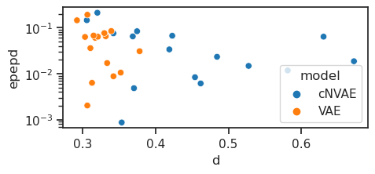
_df1 = df_dci.loc[
(df_dci['category'] == 'fixate1') &
(df_dci['model'] == 'cNVAE') &
(df_dci['beta'] != 'ae')
]
sp_stats.linregress(_df1['epepd'], _df1['i'])
LinregressResult(slope=-3.509708888366657, intercept=0.8147292378630605, rvalue=-0.9117112386579744, pvalue=8.855173092613849e-07, stderr=0.42268187758565506, intercept_stderr=0.03220091128663793)
sp_stats.linregress(_df1['epepd'], _df1['d'])
LinregressResult(slope=-0.9265798819499973, intercept=0.49122087378201207, rvalue=-0.4814875089068858, pvalue=0.058978754508755865, stderr=0.45077770944958045, intercept_stderr=0.034341318617423525)
sp_stats.linregress(_df1['epepd'], _df1['c'])
LinregressResult(slope=-0.8609464432217797, intercept=0.6763173533207186, rvalue=-0.6351173159446272, pvalue=0.008205424162820307, stderr=0.2798396510601218, intercept_stderr=0.021318850549594783)
sp_stats.pearsonr(_df1['epepd'], _df1['i'])
(-0.9117112386579744, 8.855173092613863e-07)
sp_stats.pearsonr(_df1['epepd'], _df1['d'])
(-0.48148750890688574, 0.05897875450875588)
sp_stats.pearsonr(_df1['epepd'], _df1['c'])
(-0.6351173159446273, 0.008205424162820303)
sp_stats.pearsonr(_df1['epepd'], _df1['dci'])
(-0.8957552616847395, 2.7121785044152643e-06)
fig, axes = create_figure(1, 3, (8, 2.8), sharey='all', layout='constrained')
for model in ['cNVAE', 'VAE']:
_df = df_dci.loc[
(df_dci['category'] == 'fixate1') &
(df_dci['model'] == model) &
(df_dci['beta'] != 'ae')
]
for i, item in enumerate(['i', 'd', 'c']):
sns.scatterplot(
data=_df,
y='epepd',
x=item,
color=pal_model[model],
ax=axes[i],
)
axes[i].set_ylim(bottom=-0.03)
if i > 0:
axes[i].set_ylabel('')
plt.show()
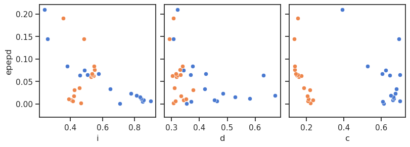
fig, ax = create_figure(1, 1, (10, 2))
_df1 = df_dci.loc[
(df_dci['category'] == 'fixate1') &
(df_dci['beta'] != 'ae')
]
sns.pointplot(data=_df1, x='beta', y='spear_kl_rho', hue='model')
<Axes: xlabel='beta', ylabel='spear_kl_rho'>
_df = df_dci.loc[df_dci['category'] == 'fixate1']
_df.iloc[[_df['dci'].argmax()]]
| model | category | beta | nf | epe | epepd | nelbo | kl | tot_active | i | d | c | dci | rho_ent | spear_kl_rho | |
|---|---|---|---|---|---|---|---|---|---|---|---|---|---|---|---|
| 14 | cNVAE | fixate1 | 0.5 | 420 | 5.370134 | 0.018582 | 29.862501 | 24.492367 | 36.0 | 81.108896 | 0.672083 | 0.651275 | 0.711483 | 0.295805 | -0.379627 |
fig, ax = create_figure(1, 1, (9, 3))
sns.pointplot(
data=_df,
y='nelbo',
x='beta',
hue='model',
hue_order=pal_model,
palette=pal_model,
order=betas,
dodge=True,
ax=ax,
)
ax.set_yscale('log')
ax.grid()
plt.show()
# ax.set(xlim=(26, 34), ylim=(0, 1.5))
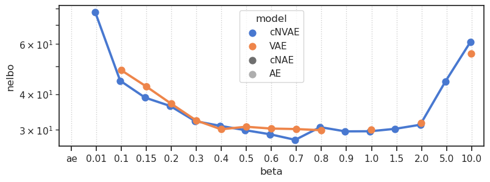
fig, ax = create_figure(1, 1, (9, 3))
sns.pointplot(
data=_df,
y='epe',
x='beta',
hue='model',
hue_order=pal_model,
palette=pal_model,
order=betas,
dodge=True,
ax=ax,
)
ax.set_yscale('log')
ax.grid()
plt.show()
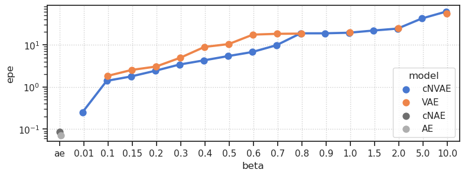
fig, ax = create_figure(1, 1, (9, 3))
sns.pointplot(
data=_df,
y='epepd',
x='beta',
hue='model',
hue_order=pal_model,
palette=pal_model,
order=betas,
dodge=True,
ax=ax,
)
ax.set_yscale('log')
ax.grid()
plt.show()
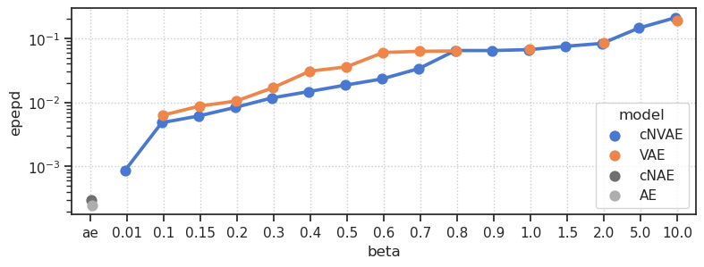
Old code (ignore)#
plt.plot(rho)
[<matplotlib.lines.Line2D at 0x7f479917fbe0>]
denum = w.sum(0, keepdims=True)
denum[denum == 0] = np.nan
p_disentang = w / denum
p_disentang.sum(0)
array([1., 1., 1., 1., 1., 1., 1., 1., 1., 1., 1., 1., 1., 1., 1., 1., 1.,
1., 1., 1., 1., 1., 1., 1., 1., 1., 1., 1., 1., 1., 1., 1., 1., 1.,
1., 1., 1., 1., 1., 1., 1., 1., 1., 1., 1., 1., 1., 1., 1., 1., 1.,
1., 1., 1., 1., 1., 1., 1., 1., 1., 1., 1., 1., 1., 1., 1., 1., 1.,
1., 1., 1., 1., 1., 1., 1., 1., 1., 1., 1., 1., 1., 1., 1., 1., 1.,
1., 1., 1., 1., 1., 1., 1., 1., 1., 1., 1., 1., 1., 1., 1., 1., 1.,
1., 1., 1., 1., 1., 1., 1., 1., 1., 1., 1., 1., 1., 1., 1., 1., 1.,
1., 1., 1., 1., 1., 1., 1., 1., 1., 1., 1., 1., 1., 1., 1., 1., 1.,
1., 1., 1., 1., 1., 1., 1., 1., 1., 1., 1., 1., 1., 1., 1., 1., 1.,
1., 1., 1., 1., 1., 1., 1., 1., 1., 1., 1., 1., 1., 1., 1., 1., 1.,
1., 1., 1., 1., 1., 1., 1., 1., 1., 1., 1., 1., 1., 1., 1., 1., 1.,
1., 1., 1., 1., 1., 1., 1., 1., 1., 1., 1., 1., 1., 1., 1., 1., 1.,
1., 1., 1., 1., 1., 1., 1., 1., 1., 1., 1., 1., 1., 1., 1., 1., 1.,
1., 1., 1., 1., 1., 1., 1., 1., 1., 1., 1., 1., 1., 1., 1., 1., 1.,
1., 1., 1., 1., 1., 1., 1., 1., 1., 1., 1., 1., 1., 1., 1., 1., 1.,
1., 1., 1., 1., 1., 1., 1., 1., 1., 1., 1., 1., 1., 1., 1., 1., 1.,
1., 1., 1., 1., 1., 1., 1., 1.])
1 - entropy_normalized(p_disentang, 0)
plt.imshow(p_disentang, aspect=10)
<matplotlib.image.AxesImage at 0x7fdfab4618b0>
list(everything)
['val',
'loss',
'data_trn',
'data_vld',
'data_tst',
'importances_mu',
'importances_sd',
'f']
w_test = np.zeros((10, 50))
for i in range(10):
w_test[i, i] = 1
w_test[i, i + 20] = 1
w_test[i, i + 30] = 1
plt.imshow(w_test)
plt.show()
compute_dci(w_test)
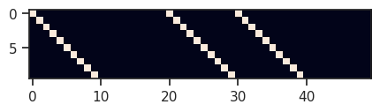
(1.0, 0.7191702893506186)
w_test = np.zeros((10, 50))
for i in range(10):
w_test[i, i] = 1
w_test[4, 6] = 1
w_test[3, 6] = 1
w_test[0, 6] = 1
plt.imshow(w_test)
plt.show()
compute_dci(w_test)
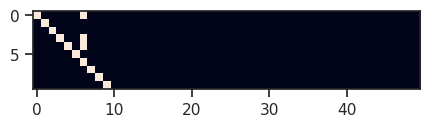
(0.8147507718990885, 0.9468448539593325)
denum = w_test.sum(0, keepdims=True)
denum[denum == 0] = np.nan
p_disentang = w_test / denum
plt.imshow(p_disentang)
<matplotlib.image.AxesImage at 0x7fdfaa661c40>
d_i = 1 - entropy_normalized(p_disentang, 0)
d_i.shape
(50,)
plt.plot(d_i)
[<matplotlib.lines.Line2D at 0x7fdfaa632f10>]
rho = w_test.sum(0) / w_test.sum()
plt.plot(rho)
[<matplotlib.lines.Line2D at 0x7fdfaa58b490>]
np.nansum(d_i * rho)
0.8147507718990885
np.nanmean(d_i)
0.9397940008672038
w_test = np.zeros((10, 50))
for i in range(10):
w_test[i, i] = 1
w_test[4, 4] = 0
w_test[3, 3] = 0
w_test[0, 0] = 0
w_test[4, 6] = 1
w_test[3, 6] = 1
w_test[0, 6] = 1
plt.imshow(w_test)
plt.show()
compute_dci(w_test)
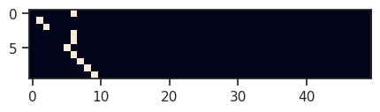
(0.7591760034688151, 1.0)
perm_mu.shape
(5, 280)
everything['importances_mu'].shape
(8, 280)
w = perm_mu
d, c
(0.32439875181597555, 0.510160201141466)
plt.plot(rho)
[<matplotlib.lines.Line2D at 0x7fdfacf283a0>]
sp_stats.pearsonr(everything['loss']['kl_diag'], rho)
(0.13922166630787042, 0.01977638395660314)
sns.scatterplot(
x=everything['loss']['kl_diag'],
y=rho,
)
<Axes: >
plt.plot(perm_mu[4])
[<matplotlib.lines.Line2D at 0x7fe09b2a2e80>]
list(everything)
['val',
'loss',
'data_trn',
'data_vld',
'data_tst',
'importances_mu',
'importances_sd',
'f']
everything['loss']['epe'].mean(), everything['loss']['kl'].mean()
(0.5646815, 23.909336)
min(everything['loss']['kl_diag']), max(everything['loss']['kl_diag'])
(0.0, 4.16862)
ax = sns.histplot(everything['loss']['kl_diag'], bins=np.logspace(-10, 2, 100))
ax.axvline(0.1, color='r', ls='--')
ax.set_xscale('log')
plt.show()
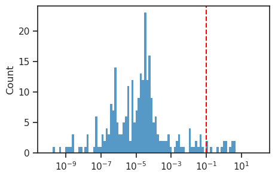
(everything['loss']['kl_diag'] <= 0.1).sum(), (everything['loss']['kl_diag'] > 0.1).sum()
(266, 14)
list(everything)
---------------------------------------------------------------------------
NameError Traceback (most recent call last)
Cell In[4], line 1
----> 1 list(everything)
NameError: name 'everything' is not defined
everything['data_tst']
{'x': [],
'y': [],
'z': array([[-0.00924373, -0.00668725, -0.00218269, ..., -0.1080126 ,
0.02699516, -0.05209924],
[-0.00933603, -0.00662458, -0.00210156, ..., -0.21367927,
0.0869858 , -0.14760306],
[-0.00917179, -0.00669082, -0.00227596, ..., 0.29358372,
-0.3044515 , 0.10462018],
...,
[-0.00911674, -0.00647449, -0.00243915, ..., 0.12978122,
0.05793152, -0.01021165],
[-0.00919618, -0.00654394, -0.00228771, ..., -0.2134269 ,
0.08058421, -0.17979455],
[-0.00907419, -0.00659908, -0.00244587, ..., 0.05912931,
-0.00423615, 0.00466096]], dtype=float32)}
everything['data_vld']
{'x': [],
'y': [],
'z': array([[-0.00936357, -0.00655375, -0.00210097, ..., -0.23126903,
-0.47400546, 0.05585103],
[-0.00927482, -0.00662192, -0.00220085, ..., 0.15709946,
-0.46287477, 0.24429414],
[-0.00905203, -0.00668927, -0.00244803, ..., -0.08507252,
-0.28464168, -0.05053638],
...,
[-0.00924551, -0.00653933, -0.00222625, ..., 0.24655789,
-0.35837793, 0.14422555],
[-0.00912849, -0.00662036, -0.00236502, ..., 0.15217587,
0.18675563, 0.05085435],
[-0.00917892, -0.00665259, -0.00225591, ..., 0.00721657,
0.14724572, -0.17497481]], dtype=float32)}
everything['f']
['fix_x',
'fix_y',
'slf_v_norm',
'slf_v_theta',
'slf_v_phi',
'slf_v_x',
'slf_v_y',
'slf_v_z']